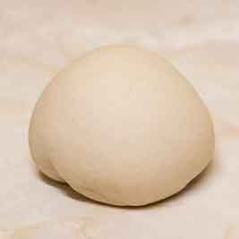
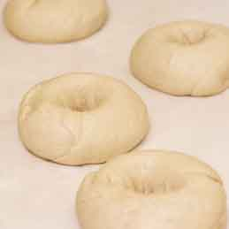

Dough

Bagel dough is unique in its composition and preparation process. The dough is typically made with high-gluten flour, which gives the bagel a dense and chewy texture. Additionally, malt syrup or sugar is often added to the dough to add sweetness and color. One of the most distinctive features of bagel dough is the boiling step that takes place before they are baked. This process, known as kettling, involves boiling the dough in water for a short amount of time before baking.

This helps to create the signature texture of a bagel, which is crispy on the outside and chewy on the inside. Boiling the dough also helps to retain the hole in the center of the bagel. Overall, the unique combination of high-gluten flour, malt syrup or sugar, and the boiling process make bagel dough unlike any other type of bread dough.